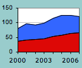
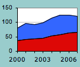
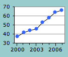
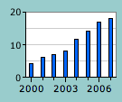
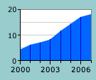
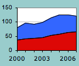
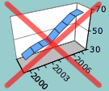

Display of a time series
We often want to describe how measurements change over time. For example, trends in AIDS rates, average incomes, and monthly rainfalls are important indicators of the success of policies in a country.
Such measurements can be graphed against a time axis as either a time series plot (similar to a scatterplot, but with successive values joined by lines), a series of bars (similar to a bar chart) or a coloured area between the values and zero.

Several related measurements
When there are several measurements at each time, they may be plotted against a common time axis. If the measurements have a meaningful total, a stacked bar chart of either raw values or percentages can be drawn at each time. The successive stacked bar charts are usually joined to form bands of colour.

Dynamic displays
On paper, time is usually represented by a horizontal axis. However if the data are displayed on a computer, any of the display types shown in previous sections can be made interactive display with a slider to change the time. Dynamic scatterplots and maps are particularly effective ways to show changed over time.
Chartjunk
Resist the temptation to publish 3-dimensional displays of time series — they generally show trends much less clearly than the corresponding 2-dimensional versions.